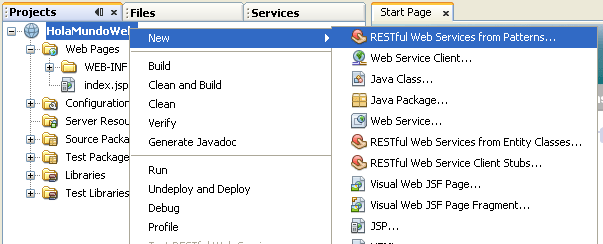
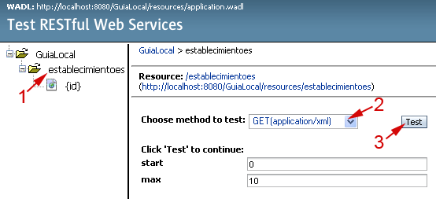

Servicios Web RESTful
El estilo REST (Representational State Transfer) es una forma alternativa de crear Servicios Web. Frente a los servicios de tipo SOAP vistos en sesiones anteriores, los servicios REST son una forma ligera de implementar Servicios Web. En este caso el elemento principal en el que se basan estos servicios son las URLs. En líneas generales podemos decir que estos servicios consisten en URLs a las que podemos acceder, por ejemplo mediante protocolo HTTP, para obtener información o realizar alguna operación. El formato de la información que se intercambie con estas URLs lo decidirá el desarrollador del servicio. Este tipo de servicios vuelve a acercar los Servicios Web al tipo de arquitectura de la web, siendo especialmente interesantes para su utilización en AJAX.
Fundamentos de REST
La clave principal de la arquitectura REST es que en ella los recursos están representados mediante URLs. Los nombres de estas URLs serán sustantivos, que indicarán la entidad a la que representan. Por ejemplo, si en nuestra aplicación tenemos información de cursos, podríamos acceder a la lista de cursos disponibles mediante una URL como la siguiente:
http://jtech.ua.es/resources/cursos
Esto nos devolverá la lista de cursos en el formato que el desarrollador del servicio haya decidido. Hay que destacar por lo tanto que en este caso debe haber un entendimiento entre el consumidor y el productor del servicio, de forma que el primero comprenda el lenguaje utilizado por el segundo.
Esta URL nos podría devolver un documento como el siguiente:
<?xml version="1.0"?>
<j:Cursos xmlns:j="http://www.jtech.ua.es"
xmlns:xlink="http://www.w3.org/1999/xlink">
<Curso id="1"
xlink:href="http://jtech.ua.es/resources/cursos/1"/>
<Curso id="2"
xlink:href="http://jtech.ua.es/resources/cursos/2"/>
<Curso id="4"
xlink:href="http://jtech.ua.es/resources/cursos/4"/>
<Curso id="6"
xlink:href="http://jtech.ua.es/resources/cursos/6"/>
</j:Cursos>
En este documento se muestra la lista de cursos registrados en la aplicación, cada uno de ellos representado también por una URL. Accediendo a estas URLs podremos obtener información sobre cada curso concreto o bien modificarlo.
Cuando utilizamos estos servicios sobre HTTP, podemos aprovechar los distintos métodos que ofrece este protocolo para representar cada una de las posibles operaciones a realizar con los datos. En la siguiente tabla se muestran los diferentes métodos HTTP que podemos utilizar y la operación SQL análoga:
| Método HTTP | Operación SQL equivalente |
|---|---|
| GET | SELECT |
| POST | INSERT |
| PUT | UPDATE |
| DELETE | DELETE |
Como ya hemos comentado, el lenguaje para el intercambio de información con el servicio queda a elección del desarrollador. Formatos comunes que podemos utilizar para intercambiar esta información son los siguientes:
| Formato | Tipo MIME |
|---|---|
| Texto plano | text/plain |
| HTML | text/html |
| XML | application/xml |
| JSON | application/json |
De especial interés es el formato JSON. Se trata de un lenguaje ligero de intercambio de información, que puede utilizarse en lugar de XML (que resulta considerablemente más pesado) para aplicaciones AJAX. De hecho, en Javascript puede leerse este tipo de formato simplemente utilizando el método eval().
A continuación se muestra una tabla resumen con las principales diferencias entre los servicios RESTful y los servicios SOAP.
| RESTful | SOAP |
|---|---|
| Ligeros | Pesados |
| Se trata de un estilo arquitectónico | Se definen de forma estándar |
| No necesitan herramientas adicionales para construirlos | Contamos con herramientas que facilitan el trabajo |
| Protocolo de comunicaciones entendible por un humano | Se pueden integrar de forma automática en aplicaciones |
| El desarrollador del servicio debe dejar documentación, ejemplos de uso y librerías para acceder al servicio | Interoperables |
A la hora de decidir si implementar nuestros servicios web de tipo SOAP o RESTful, podemos tener en cuenta los siguientes factores:
| RESTful | SOAP |
|---|---|
|
|
Crear servicios RESTful con Netbeans
En Netbeans encontramos diferentes altermativas para crear nuestros servicios RESTful. Lo primero que necesitamos es tener un proyecto web en el cual crear los servicios.
La primera vez que vayamos a crear servicios RESTful en Netbeans deberemos añadir un plugin necesario para que soporte este tipo de servicios. Para ello iremos al menú Tools > Plugins.
En la ventana que se abrirá vamos a la pestaña Available Plugins, y en la lista de plugins marcamos RESTful Web Services. A continuación pulsamos sobre el botón Install para comenzar a instalar el plugin.
Una vez tengamos instalado el plugin necesario (esto sólo tendremos que hacerlo una vez), dentro de nuestro proyecto web podremos añadir servicios RESTful pulsando con el botón derecho del ratón y seleccionando una de las siguientes opciones:
| RESTful Web Services from Patterns... | Esta opción sirve para crear nuevos servicios siguiendo diferentes tipos de patrones. Se creará una plantilla en la que deberemos introducir nosotros el código que implementa el servicio. |
| RESTful Web Services from Entity Classes... | Con esta opción Netbeans genera automáticamente los servicios a partir de las entidades que seleccionemos, de forma que se pueda acceder a ellas y manipularlas a través de URLs. |

En el caso de elegir la opción de crear un nuevo servicio utilizando patrones, nos dará a elegir entre los siguientes tipos de patrones para nuestro servicio:
| Singleton | El servicio se encontrará accesible en una única URL. Accediendo a esta URL se obtendrá información o se podrá realizar alguna operación. Útil para servicios muy sencillos, tipo Hola Mundo, o para dar acceso a servicios SOAP mediante una arquitectura REST. |
| Container-Item | Encontramos dos tipos de URLs: una URL contenedora, y varias URLs representando items dentro de ese contenedor. Este tipo de patrón se utilizará cuando estemos tratando con colecciones de datos. Por ejemplo podremos utilizar este patrón para acceder a una entidad Curso de una base de datos. En este caso podremos consultar la lista de cursos (GET) o añadir nuevos cursos (POST) a través del contenedor, o consultar los datos de un curso concreto mediante una de las URLs hijas (items). |
| Client-Controlled Container-Item | Se trata de una variación de la anterior, en la que para añadir un nuevo item al contenedor no se utiliza el método POST sobre el contenedor, sino el método PUT sobre los items. Por eso recibe el nombre de Client-Controlled. |
Crear un servicio RESTful sencillo
Para empezar vamos a crear un servicio Hola Mundo simple utilizando patrones. Partiremos de un proyecto web llamado HolaMundoWeb, al que añadiremos los servicios RESTful siguiendo los siguientes pasos:
- Pulsaremos sobre el proyecto web con el botón derecho y seleccionaremos RESTful Web Services
from Patterns...
- Como se trata de un servicio sencillo, en el que no tratamos con colecciones de
datos, seleccionaremos el patrón Singleton.
- Vamos a ubicar la implementación del servicio en el paquete
es.ua.jtech.servcweb.rest, y al recurso al que accederemos mediante
este servicio le daremos el nombre HolaMundo. Automáticamente se
actualizará el nombre de la clase que implementará dicho servicio y la ruta en la que se
encontrará. Como tipo MIME de la respuesta seleccionaremos text/html.
Una vez introducidos estos datos pulsamos Finish.
- Veremos en el entorno el servicio recién creado. La implementación de este servicio
se encuentra en una clase HolaMundoResource. Como vamos a utilizar este
servicio únicamente para obtener datos, sólo necesitaremos introducir código en el
método getHtml de dicha clase, que es el que se invocará cuando se
haga una petición GET. Deberemos devolver una cadena con el contenido
que queramos enviar al cliente (en este caso será de tipo HTML). Haremos que devuelva
una cadena con un párrafo HTML en el que nos diga Hola Mundo!.
NotaSi simplemente quisieramos enviar datos al servidor, sin obtener datos como respuesta, utilizaríamos el método putHtml. En este caso podremos enviar al servicio una cadena con contenido en cualquier formato.
- Una vez implementado el servicio, vamos a probarlo. Contamos con una
herramienta integrada en el entorno de Netbeans para probar este tipo de servicios,
al igual que en el caso de los servicios SOAP. Para probarlos pulsaremos con
el botón derecho sobre nuestro proyecto y seleccionaremos la opción
Test RESTful Web Services.
- Se abrirá una ventana del navegador con el cliente de prueba. En esta interfaz
deberemos seleccionar en primer lugar el recurso al que queremos acceder (en nuestro
caso holaMundo), y nos aparecerán las operaciones que podremos hacer con
él. Veremos que tenemos la operación GET seleccionada por defecto, y además se
muestra la URL a la que está vinculado el recurso.
- Pulsaremos sobre el botón Test para acceder mediante médoto GET a la URL.
Veremos información sobre la respuesta distribuida en varias pestañas. En la pestaña
Raw View podemos observar lo que ha devuelto el servicio.
- Vamos ahora a parametrizar el servicio, para poderle indicar el nombre al que
queremos que salude. Para añadir un parámetro al servicio, simplemente añadiremos un
argumento al método getHtml. Este argumento deberá tener la anotación
@QueryParam para indicar que se trata de un parámetro para la consulta
del servicio, y de forma opcional podremos añadirle también un valor por defecto con
la anotación @DefaultValue. Por ejemplo, en nuestro caso pondremos
un parámetro tipo String con el nombre al que se quiere saludar, con
las correspondientes anotaciones:
@GET @ProduceMime("text/html") public String getHtml(@QueryParam("nombre") @DefaultValue("John Doe") String nombre) { return "<p>Hola " + nombre + "</p>"; } - Si volvemos a pulsar sobre Test RESTful Web Services se volverá a
desplegar el servicio, actualizando los últimos cambios, y se nos volverá a mostrar
el cliente de prueba. En este caso podremos observar que la operación GET nos
pide un parámetro, cuyo valor por defecto es el que hemos especificado en el código.
- Por último, también debemos destacar que la URL en la que estará dicho servicio es:
http://localhost:8080/HolaMundoWeb/resources/holaMundo?nombre=John Doe
Podemos hacer un cliente sencillo en Java para acceder a este servicio
// Definimos la URL en la que se encuentra el servicio
URL url = new URL("http://localhost:8080/HolaMundoWeb/resources/" +
+ "holaMundo?nombre=Pepe");
HttpURLConnection httpConn = (HttpURLConnection)url.openConnection();
// Establecemos la conexión con el servicio
httpConn.setRequestMethod("GET");
InputStream is = httpConn.getInputStream();
// Imprimimos el resultado devuelto por la URL
BufferedReader br = new BufferedReader(new InputStreamReader(is));
String s;
while( (s=br.readLine())!=null ){
System.out.println(s);
}
Si en lugar de acceder a información, lo que queremos es enviar información al servicio, utilizaremos el método PUT. En el caso de nuestro servicio Hola Mundo, podríamos definir el método putHtml como se muestra a continuación:
static String texto="";
@PUT
@ConsumeMime("text/html")
public void putHtml(String content) {
texto+=content;
}
Podemos escribir un cliente sencillo que publique información en el servicio utilizando este método:
// Definimos la URL en la que se encuentra el servicio
URL url = new URL(
"http://localhost:8080/HolaMundoWeb/resources/holaMundo");
HttpURLConnection httpConn = (HttpURLConnection)url.openConnection();
// Establecemos el método PUT
httpConn.setRequestMethod("PUT");
httpConn.setDoOutput(true);
// Enviamos texto al servicio
OutputStream os = httpConn.getOutputStream();
PrintStream ps = new PrintStream(os);
ps.println("<p>Contenido a enviado</p>");
httpConn.getInputStream();
Crear un servicio RESTful a partir de JPA
Hemos visto que existen diferentes patrones a partir de los cuales crear servicios de tipo RESTful. El patrón Container-Item hemos visto que es adecuado para representar colecciones de datos. Normalmente se utilizará para acceder a los datos en una base de datos (una tabla puede ser vista como una colección de registros). Dado que este será el uso más común de este tipo de servicios, Netbeans nos permitirá crear directamente los servicios a partir de las entidades existentes.
Para crear servicios RESTful que nos permitan acceder a entidades de nuestra base de datos deberemos contar primero con objetos JPA que nos den acceso a ellas.
Vamos a ver un ejemplo paso a paso de cómo crear servicios RESTful a partir de entidades JPA con Netbeans:
- Empezaremos creando una base de datos sencilla en MySQL. Para ello primero deberemos poner en marcha el
servidor MySQL (si no lo está ya), y crear mediante la consola MySQL una nueva base de datos llamada
guia:
CREATE DATABASE guia;
- Ahora vamos a establecer una conexión a esta base de datos desde Netbeans. Para ello vamos a Services >
Databases > Drivers > MySQL, pulsamos sobre él con el botón derecho del ratón, y seleccionamos la opción
Connect Using ....
- En la ventana que aparece introducimos la URL de la base de datos que acabamos de crear
(jdbc:mysql://localhost/guia), y los datos de acceso del usuario root.
De forma alternativa, también podríamos crear un base de datos Derby desde dentro del entorno Netbeans. Para ello:
- Iremos al menú Tools y seleccionaremos la opción Java DB Database > Create Database ....
- Introduciremos los datos de la nueva base de datos que queremos probar, proporcionando un login y password
para acceder a ella:
Independientemente del método que hayamos seguido para crear la base de datos, en este momento tendremos en el grupo Databases de la pestaña Services una conexión a nuestra base de datos. Si la conexión no estuviese establecida, podemos pulsar con el botón derecho sobre la conexión y seleccionar Connect ... para conectar con la base de datos.
- Desplegamos la conexión recién creada, y pulsamos sobre Tables con el botón derecho para
crear una nueva tabla con la opción Create Table ....
- La tabla se llamará ESTABLECIMIENTOS, y tendrá 4 columnas (id, nombre, actividad,
direccion)). Una vez introducidos los datos pulsamos sobre OK y se creará la tabla.
- Vamos ahora a introducir algunos datos iniciales de prueba en la tabla. Para ello pinchamos sobre la
conexión a nuestra base de datos con el botón derecho y seleccionamos Execute Command ....
- Introduciremos las siguientes sentencias SQL y las ejecutaremos:
INSERT INTO establecimientos(id,nombre,actividad,direccion) VALUES(1,'Telepizza','Restaurante', 'Avenida de la estacion, 5, Alicante, Spain'); INSERT INTO establecimientos(id,nombre,actividad,direccion) VALUES(2,'Cines Aana','Cine', 'Calle Médico Pascual Pérez, 46, Alicante, Spain'); - Una vez creada la base de datos, pasaremos a la pestaña Projects, y crearemos una nueva aplicación web a la que llamaremos GuiaLocal.
- Pulsamos con el botón derecho sobre el proyecto que acabamos de crear, y seleccionamos New >
Entity Classes from Database ..., para que genere de forma automática las clase JPA a partir de la
base de datos.
- En Data Source, seleccionamos New Data Source ... para crear una nueva fuente de datos.
- Como nombre de la fuente de datos escribimos jndi/guia, y especificamos la conexión a
nuestra base de datos. Tras introducir estos datos pulsamos OK para crear la fuente de datos.
- Ahora debemos especificar las tablas de las que queremos crear las entidades JPA. Pulsamos sobre
Add All >>, y a continuación a Next para pasar al siguiente paso.
- Introducimos el nombre del paquete en el que queremos crear la clase de JPA
(es.ua.jtech.servcweb.rest.jpa), y pulsamos sobre
Create Persistence Unit ... para crear la unidad de persistencia.
- Dejamos los datos por defecto de la unidad de persistencia, y pulsamos sobre Create para crearla.
Tras esto, pulsamos el botón Finish para terminar de crear las entidades JPA.
- Ahora que tenemos creadas las entidades JPA, vamos a generar de forma automática los servicios RESTful
a partir de ellas. Para ello pulsamos con el botón derecho sobre el nombre del proyecto, y seleccionamos
New > RESTful Web Services from Entity Classes ...
- Pulsamos sobre Add All >> para exportar todas las entidades como servicios REST, y pulsamos
Next para continuar.

- Nos muestra los nombres que va a utilizar para los recursos que compondrán el servicio. Podemos adaptar los
nombres de los paquetes a la estructura de paquetes de nuestro proyecto, y pulsamos Finish para terminar.
- Ya podemos abrir el cliente de prueba para probar los servicios que acabamos de crear. Al ejecutar el
cliente de prueba vemos en la parte izquierda un nodo establecimientoes que representa el
contenedor, que nos permitirá acceder a la lista de establecimientos (GET) o añadir uno nuevo (POST).
Pincharemos sobre dicho nodo, y ejecutaremos la operación GET como se muestra a continuación:

- En la parte inferior veremos el resultado. En este caso, al tratarse de un contenedor podemos ver
en modo tabla (Tabular) la lista de recursos que contiene. Nos aparece así nuestra lista de items (establecimientos),
mostrando para cada uno la URL a la que se encuentra mapeado (por ejemplo
http://localhost:8080/GuiaLocal/resources/establecimientoes/1/), y además un enlace para acceder
a dicho item mediante el cliente de prueba (por ejemplo /establecimientoes/1/).
- Si consultamos la vista Raw, vemos como es realmente el documento que nos ha proporcionado la
URL contenedora (que en nuestro caso es http://localhost:8080/GuiaLocal/resources/establecimientoes).
Podemos observar que en el documento XML figura la lista de items obtenidos, indicando para cada uno de
ellos la URL en la que podemos acceder a su información.
- Volvemos a la vista Tabular, y entramos en la URL correspondiente al primero de los establecimientos.
Esta URL nos devolverá el siguiente documento XML, en el que como podemos observar figuran todos los datos
de dicho establecimiento:
- Volvemos a la pantalla del cliente de prueba correspondiente al contenedor, y ahora vamos a acceder
mediante POST para añadir un nuevo item. Los datos del nuevo establecimiento que proporcionaremos
serán los siguientes:
<establecimiento> <actividad>Cine</actividad> <direccion>Plaza del Carmen, 16, Alicante, Spain</direccion> <id>3</id> <nombre>Cines Astoria</nombre> </establecimiento>
- Una vez enviado, si volvemos a consultar la lista de recursos, veremos que aparece el nuevo establecimiento. Debemos hacer notar que en este caso saber con qué formato debemos pasar la información al servicio no es inmediato. Será complicado que alguien que no ha desarrollado el servicio pueda hacer un cliente para acceder a él si no le proporcionamos ayuda (documentación, ejemplos, y a ser posible un kit de desarrollo).
- Si desde la vista Tabular obtenida tras ejecutar GET en el contenedor pinchamos sobre en enlace
/establecimientoes/1/ nos llevará a la pantalla del cliente de prueba que nos permitirá
tratar con un item concreto. En este caso será el primero de los establecimientos.
- Desde esta interfaz, además de poder utilizar la operación GET para obtener la información del establecimiento, podremos ejecutar las operaciones PUT y DELETE para modificar o eliminar, respectivamente, dicho item.
Si observamos el código fuente que se ha generado para implementar el servicio, podemos observar que está repartido en dos paquetes diferentes: converter y service. En el primero de ellos se encuentran los conversores entre XML y las entidades que manipula nuestro servicio. En el segundo tenemos las clases principales del servicio. Si nos fijamos en este último paquete veremos las clases EstablecimientoesResource y EstablecimientoResource. La primera de ellas representa el contenedor, e implementa las operaciones GET y POST, para obtener la lista de establecimientos y añadir un nuevo establecimiento respectivamente. La segunda de ellas representa los items (establecimientos concretos), y en ella tendremos las operaciones GET, PUT y DELETE, que nos permitirán consultar los datos de un establecimiento, modificarlo, o borrarlo.
Integrar servicios RESTful ajenos
Netbeans nos permite integrar de forma sencilla algunos de los servicios existentes más populares en nuestros propios servicios. Al abrir una de las clases que implementan nuestro servicio RESTful (aquellas cuyo nombre acaba en Resource), se nos mostrará una paleta con servicios que podemos integrar simplemente arrastrándolos sobre nuestro servicio.
Vamos a ver un ejemplo guiado de como utilizar el servicio de mapas proporcionado por Google dentro de nuestro servicio de establecimientos. Lo que pretendemos es que, para un establecimiento dado, nuestro servicio sea capaz de mostrarnos un mapa con su ubicación. Para ello seguiremos los siguientes pasos:
- Abrimos la clase EstablecimientoResource en el editor. Dado que nuestro objetivo es mostrar la ubicación de un establecimiento concreto, esta será la clase que tendrá la información necesaria.
- Podemos observar a la derecha la paleta de servicios que incorpora Netbeans para ser integrados de forma
automática. Arrastraremos el servicio Map de Google sobre el código de nuestra clase.
- Nos mostrará una ventana donde podremos especificar la ruta a la que mapearemos el servicio de Google, que
será relativa a la ruta en la que se encuentre el recurso (establecimiento) sobre el que queramos
ejecutarlo. También podemos indicar los parámetros por defecto que proporcionaremos al servicio de Google. Uno
de los parámetros necesarios es una clave (apiKey). Podemos obtener una en la siguiente web:
http://code.google.com/apis/maps/signup.html
Indicaremos que el sitio web desde el cual vamos a utilizar el servicio de Google es http://localhost:8080. Una vez tengamos la clave, podemos ponerla como valor por defecto para el parámetro apiKey. - Una vez hecho esto, veremos que Netbeans ha añadido automáticamente el siguiente método a nuestra clase
EstablecimientoResource:
@Path("googleMap/") public GoogleMapResource getGoogleMap() { try { String apiKey = null; String address = null; Integer zoom = null; return new GoogleMapResource(apiKey, address, zoom); } finally { PersistenceService.getInstance().close(); } } - Poniendo los parámetros a null, estos tomarán sus valores por defecto. Podemos modificar este
código, para que tome la dirección de la dirección del establecimiento que estemos consultando. Esto lo
haremos de la siguiente forma:
String address = getEntity().getDireccion();
- Podemos también introducir en el código de dicho método nuestro código (apiKey) y el zoom
con el que mostrará el mapa. Si volvemos a probar los servicios con el cliente de prueba, y vamos a obtener la
información de un establecimiento concreto, ahora como resultados en modo tabla nos aparecerá lo siguiente:
- Esto significa que el acceso al mapa es un subrecurso de cada establecimiento. Por ejemplo, para acceder
al mapa correspondiente al primer establecimiento, tendremos una URL como la siguiente:
http://localhost:8080/GuiaLocal/resources/establecimientoes/1/googleMap/
- Si accedemos a dicha URL veremos el mapa correspondiente (este servicio nos devuelve contenido HTML):
Crear un cliente para servicios RESTful
Para finalizar, vamos a ver como podemos crear un stub que pueda ser utilizado para acceder a nuestro servicio desde otros clientes. Dado que en este caso no tenemos un contrato estricto como era el WSDL, que nos permitía generar de forma automática los stubs para acceder al servicio, será buena idea dejar a los posibles clientes alguna librería que les permita acceder a las operaciones de nuestro servicio.
Podemos crear de forma automática una librería Javascript para acceder a nuestro servicio. Esta librería podríamos dejarla de forma pública en nuestro servidor, para que los clientes que quieran utilizar nuestros servicios puedan importarla desde sus páginas web, pudiendo incluso acceder a ellas desde sitios web estáticos.
Para generar esta librería seguiremos los siguientes pasos:
- Pulsamos con el botón derecho sobre el proyecto en el que queramos crear la librería Javascript que dé
acceso al servicio, y seleccionamos New > RESTful Web Service Client Stubs ....
- Pulsamos sobre el botón Add Project ... y seleccionamos el proyecto en el que estén los servicios
a los que queremos dar acceso. Tras esto desmarcaremos la casilla Create jMaki Rest Components para que
se limite a crear una librería Javascript básica, y pulsamos sobre Finish.
Una vez creado el stub, podremos probarlo mediante la página TestStubs.html que habrá sido generada de forma automática, como ejemplo de uso de la librería.
De forma alternativa también podemos crear componentes jMaki para el cliente del servicio. jMaki es un framework AJAX que puede ser utilizado tanto en el lado del cliente como en el del servidor. Por ejemplo, nos proporciona una colección de tags JSP con los que podemos añadir una serie de widgets basados en AJAX a nuestras páginas. De esta forma, podremos generar widgets jMaki que den acceso a nuestros servicios RESTful. Para generar estos componentes previamente deberemos tener instalado el plugin de jMaki en Netbeans (jMaki Ajax support):
Además, deberemos añadir jMaki a la lista de frameworks del proyecto en el que vayamos a crear este tipo de componentes. Para ello entramos en las propiedades del proyecto (pulsando con el botón derecho sobre el proyecto y seleccionando Properties, y en la sección Frameworks añadimos el framework jMaki (si no lo habíamos añadido previamente en la creación del proyecto):
Una vez hecho esto podemos crear el stub jMaki igual que en el caso anterior, pero esta vez dejando marcada la casilla Create jMaki Rest Components.
Una vez generado el stub, además de tener una librería Javascript en la carpeta web con los componentes jMaki, tendremos un fichero ZIP en el directorio raíz de nuestro proyecto cliente, que tendrá como nombre el nombre del proyecto en el que se encuentran los servicios. Este ZIP contiene los componentes jMaki para acceder al servicio. Podemos importarlo en Netbeans añadiendo estos componentes a la paleta de componentes jMaki. Para ello vamos al menú Tools y seleccionamos Palette > Add jMaki Library:
Seleccionamos el fichero ZIP que hemos generado previamente, para añadir los componentes que contiene. De esta forma, cuando editemos una página JSP tendremos disponibles estos componentes en la paleta: